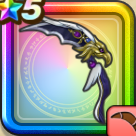

ガルーダウィング
攻略班 7.0点 / ムーンサルトスライムブロウシャドーステップロックオンシュートグライディングバード
くわしい特徴
【レベル別習得スキル】 Lv1【レンジャー】すばやさ+10 Lv1ムーンサルト（消費MP：3）飛行系に威力250%それ以外の系統には130%の体技ダメージを与える Lv10スライムブロウ（消費MP：5）敵全体のスライム系に威力180%それ以外の系統には110%の斬撃ダメージ Lv15シャドーステップ（消費MP：5）華麗なステップでみかわし率を上げる Lv20ロックオンシュート（消費MP：22）単体に320％のバギ属性体技ダメージを与え、斬撃・体技ダメージがガードやみかわしされなくなる効果を自分に付与する Lv30グライディングバード（消費MP：32）敵全体にメガモンスターなら420％、それ以外には285％のドルマ属性体技ダメージを与え、まれに守備力を1段階下げる Lv35鳥系へのダメージ+5% Lv40怪人系へのダメージ+5% Lv45さいだいMP+12 Lv50攻撃力+12 【限界突破スキル】 1凸スキルの斬撃・体技ダメージ+5% 2凸スキルの斬撃・体技ダメージ+5% 3凸スキルの斬撃・体技ダメージ+5% 4凸スキルの斬撃・体技ダメージ+5%